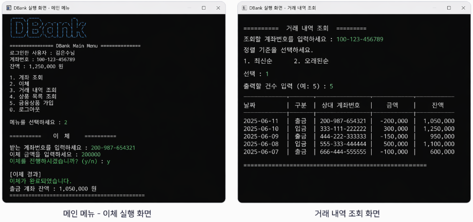

TEAM PROJECT
JDBC와 MySQL을 기반으로
이체와 금융상품 가입을 구현한 은행 시스템

MySQL과 JDBC를 활용해
이체와 상품 가입 흐름을 직접 구현하고 데이터 처리 과정을
학습했습니다
특히 하나의 요청이 여러 테이블에 영향을 주는 상황에서, 데이터가 어떤 순서로 흘러가고 어떻게 정합성을 유지해야 하는지 이해하는 것이 이 프로젝트의 핵심 목표였습니다.
고두환
거래 VO / DAO 구현, 거래 서비스 계층 구현, 거래 실행부 구현, TransactionTable 정의
김은수
상품 VO / DAO 구현, 거래 내역 조회 서비스 구현, 거래 조회 실행부 구현, ProductTable 정의
양민영
계좌 VO / DAO 구현, 상품 목록 조회 서비스 구현, 메인 / 상품 리스트 실행부 구현, AccountTable 정의, 문서화 및 빌드 환경 정리
이건우
유저 상품 VO / DAO 구현, 상품 가입 서비스 구현, 상품 가입 실행부 구현, UserProductTable 정의
이수현
유저 VO / DAO 구현, 유저 서비스 계층 구현, 세션 관리, 메인 실행부, 유틸리티 클래스 구현, UserTable 정의
기능 구현보다,
데이터 흐름을 이해하는 데 초점을 두고 참여했습니다.
DB, JDBC 교육 과정 중 진행된 팀 프로젝트로, 실제 은행 시스템의 흐름을 직접 구현해보며 데이터가 어떻게 연결되고 처리되는지 이해하는 것을 목표로 했습니다.
저는 거래 내역 조회 기능과 데이터 조회 흐름을
담당하며, 실제 데이터가 어떻게 가공되고 사용자에게 전달되는지 이해하는
데 집중했습니다.
상품 및 거래 구조 이해
Product, Transaction 구조를 직접 구현해보며 데이터가 어떻게 저장되고 연결되는지를 이해했습니다.
JDBC 기반 데이터 처리 경험
DAO 계층을 통해 DB와 직접 연결하며 쿼리 실행과 데이터 처리 흐름을 경험했습니다.
서비스 계층 흐름 이해
Service 계층을 통해 요청이 어떻게 처리되는지 보며 비즈니스 로직과 데이터 접근의 역할 차이를 이해했습니다.
거래 내역 조회 기능 구현 참여
거래 내역 조회 기능을 구현하면서 정렬, 출력 조건 처리 등 실제 데이터 활용 방식을 경험했습니다.
사용자 인증
로그인 후 세션을 기준으로 사용자 정보를 식별하고 메인 메뉴로 이동합니다.
계좌 및 잔액 확인
사용자 계좌 정보를 조회하고 현재 잔액을 확인합니다.
이체 또는 상품 선택
사용자는 이체를 진행하거나 금융상품 목록을 조회하고 상품 가입을 시도할 수 있습니다.
서비스 로직 처리
Service 계층에서 조건 검증, DAO 호출, 결과 조합을 수행합니다.
DB 반영 및 결과 출력
최종 결과를 DB에 반영하고, 성공 / 실패 메시지 또는 조회 결과를 콘솔에 출력합니다.
기능을 만든 것이 아니라,
데이터가 움직이는 구조를 이해한 프로젝트
기능 구현보다,
기준을 맞추는 협업이 더 중요했습니다.
DB 구조 기준 맞추기
각자 테이블을 담당하다 보니 컬럼명, 데이터 타입, 관계 구조가 서로 달라지는 문제가 있었습니다.
이를 해결하기 위해 테이블 정의를 공유하고, 명명 규칙과 관계 구조를 맞추는 과정을 거쳤습니다.
계층 구조 통일
DAO와 Service 구현 방식이 팀원마다 달라 코드 구조가 일관되지 않는 문제가 발생했습니다.
이를 맞추기 위해 DAO / Service 역할을 명확히 나누고, 구현 방식과 흐름을 통일했습니다.
실행 환경 공유
JDBC 기반 프로젝트 특성상 DB 연결 정보, 실행 환경 차이로 오류가 발생했습니다.
application.properties.template과 실행 가이드를 공유해 동일한 환경에서 실행되도록 맞췄습니다.
기능 단위 협업 경험
각자 기능을 나눠 구현했지만, 하나의 흐름으로 연결되도록 테스트를 반복했습니다.
이를 통해 각 기능이 자연스럽게 연결되도록 전체 흐름을 기준으로 협업하는 경험을 했습니다.
기능을 만들기보다,
데이터 흐름을 단계별로 이해하는 방식으로 진행했습니다.
전체 구조 먼저 이해
user → account → transaction → product로 이어지는 데이터 흐름을 먼저 정리했습니다.
기능 구현 전에 어떤 데이터가 어디로 이동하는지부터 이해하는 데 집중했습니다.
JDBC 기반 데이터 처리 학습
DAO를 통해 DB와 직접 연결하며 쿼리 실행과 결과 처리 과정을 경험했습니다.
단순 조회뿐 아니라 insert, update가 어떻게 동작하는지 직접 확인했습니다.
계층 구조 역할 구분
DAO와 Service 계층을 나누며 데이터 접근과 비즈니스 로직의 역할 차이를 이해했습니다.
DAO는 DB 처리, Service는 흐름 제어를 담당하도록 구조를 나누어 보았습니다.
기능을 통해 흐름 확인
거래 내역 조회 기능을 구현하며 데이터가 실제로 어떻게 활용되는지를 확인했습니다.
정렬, 출력 건수 설정 등을 통해 데이터를 가공하는 과정을 경험했습니다.
실행 흐름 전체 연결
사용자 입력 → 서비스 호출 → DAO 실행 → 결과 출력까지 전체 흐름을 하나로 연결해보았습니다.
단순 기능이 아니라, 하나의 요청이 어떻게 처리되는지 전체를 이해하는 데 집중했습니다.
이체 중 데이터 불일치 가능성
출금과 입금, 거래 내역 저장이 각각 따로 처리되면 중간 실패 시 잔액과 거래 기록이 어긋날 수 있는 문제가 있었습니다.
이를 방지하기 위해 하나의 흐름 안에서 검증과 처리가 이어지도록 서비스 구조를 정리했고, 실패 시 다음 단계로 진행되지 않도록 로직을 분기했습니다.
DAO 중심 구현으로 인한 복잡도 증가
기능이 늘어날수록 DAO끼리 직접 연결되는 구조가 생기면 코드가 복잡해지고 유지보수가 어려워지는 문제가 있었습니다.
이를 해결하기 위해 Service 계층을 중심으로 로직을 통합하고, DAO는 데이터 접근만 담당하도록 역할을 분리했습니다.
거래 내역 출력 가독성 문제
거래 데이터가 많아질수록 결과가 길어지고, 사용자가 원하는 정보를 바로 확인하기 어려운 문제가 있었습니다.
이를 개선하기 위해 정렬 기준과 출력 건수 제한을 기능으로 추가해 조회 결과를 더 읽기 쉽게 만들었습니다.
실행 환경 설정 문제
JDBC 기반 프로젝트 특성상 DB 연결 정보, 인코딩, 권한 설정이 맞지 않으면 실행 자체가 되지 않는 문제가 있었습니다.
이를 해결하기 위해 application.properties.template, .gitignore, Gradle 빌드 구조를 정리하고 팀원마다 동일한 실행 환경을 맞출 수 있도록 설정 방식을 통일했습니다.
기능보다,
데이터 흐름과 구조를 먼저 이해하게 되었습니다.
트랜잭션 개념을 실제 흐름에서 이해했습니다.
이체 기능을 통해 하나의 요청이 출금, 입금, 거래 내역 저장까지 여러 데이터에 영향을 준다는 것을 직접 경험했습니다.
이 과정에서 중간 단계에서 실패하면 전체가 취소되어야 한다는 트랜잭션의 필요성을 이해하게 되었습니다.
DAO / Service 계층 분리의 이유를 체감했습니다.
처음에는 DB 처리와 로직을 함께 작성했지만, 코드가 복잡해지고 재사용이 어려워지는 문제를 겪었습니다.
이를 통해 DAO는 데이터 접근, Service는 흐름 제어라는 역할을 나누는 것이 유지보수에 중요하다는 것을 이해했습니다.
JDBC 기반 데이터 처리 과정을 이해했습니다.
Connection, PreparedStatement, ResultSet을 직접 다루며 쿼리 실행 → 결과 처리 → 자원 해제 흐름을 경험했습니다.
특히 DB 연결과 자원 관리가 제대로 되지 않으면 오류가 발생한다는 점을 직접 확인했습니다.
DB 설계가 서비스에 직접 영향을 준다는 것을 배웠습니다.
테이블 구조와 컬럼 설계가 기능 구현에 영향을 주며, 잘못 설계하면 로직이 복잡해진다는 것을 경험했습니다.
이를 통해 기능보다 먼저 데이터 구조를 설계하는 것의 중요성을 이해했습니다.
팀 프로젝트에서는 기준 통일이 중요했습니다.
각자 다른 방식으로 구현하면 DB 구조, 코드 스타일, 실행 환경이 달라져 문제가 발생할 수 있었습니다.
이를 맞추는 과정에서 명명 규칙, 계층 구조, 실행 환경을 통일하는 것이 협업의 핵심이라는 것을 배웠습니다.
아쉬운 점도 있었습니다.
JDBC 기반으로 직접 구현하면서 트랜잭션 처리를 완전히 자동화하지 못했고, 프레임워크를 활용한 구조와의 차이를 느꼈습니다.
이후에는 Spring과 같은 프레임워크를 통해 트랜잭션 관리가 어떻게 개선되는지까지 학습해보고 싶다고 생각했습니다.